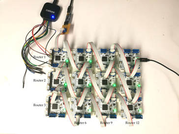

Lightweight Networking for Control Systems
Skills Demonstrated
Motivation
The field of Networked Control Systems, or NCS, is unique from many other networking fields. NCS refers to any application where many devices are linked together to perform control of a physical system. They are common in robotics and avionics, where many sensors and actuators work together to perform a common goal (i.e. walking, stabilization, etc.), and in manufacturing, where machine degrees of freedom are linked to close positioning control loops, and where multiple machines are linked to coordinate material handling and production scheduling.
Critically,
- In NCS, total throughput is valued but not a key metric.
- Rather, message sizes are typically very small (between three and fifty bytes) and message delay time is the critical metric. Often, messages are only one packet in length.
- Determinism in Message Delivery Time is critical. Systems must guarantee that certain control loops 'close' within a defined set of time less they become unstable.
- Robustness is critical. NCS should not contain any Single Points of Failure
- Statelessness is critical. NCS should not pause operation under any circumstances to re-converge on routing solutions, as this adds fatal indeterminism to message delivery.
State of the art Networked Control Systems employ simple Switched Ethernet, or proprietary versions thereof, in order to route traffic. Hardware endpoints are fitted with an Ethernet PHY and are connected in a heirarchy of switches. Ethernet MAC addresses are used, and all routing takes place on Layer 2.
Switched Ethernet has become the industry standard because of its relative interoperability and high speeds. Critically, the last 10 years has seen Switched Ethernet take up large portions of market share because it solves many problems associated with Fieldbusses. Most importantly, adding devices to a Fieldbus always caused a linear increase in message delivery time, as is not the case with Switched Ethernet.
However, Switched Ethernet was not originally developed for Networked Control Systems, and many in industry have pointed out that it will not fulfill customer needs in the near- and long-term future.
In Switched Ethernet, because a Minimum Spanning Tree is created, nodes in a particular layer compete for link-time on the layer above. Message delay time increases linearly with the probability that peers are transmitting at the same time, and with the number of peers on that layer.
In addition, Switched Ethernet contains Single Points of Failure, where a broken link or switch means that the network must re-run the Spanning Tree Protocol algorithm - a process that often takes seconds. Because Switched Ethernet graphs are highly heirarchical, it is often the case that failure on a single link can cause entire sections of the network to fail, or become unreachable.
Device endpoints in NCS are scaling down in size and up in number. Requiring that each endpoint carries with it an RJ45 Magnetic Jack and Ethernet PHY is dubious, and sets a lower limit on the size and complexity that sensors and actuators in an NCS must possess.
Switched Ethernet is non-programmable. I.E. Switches are black-box IC's and do not allow systems designers to arbitrarily add functions to a system on the networking layer. For example, many NCS designers would like to implement message priorities and load balancing, but this is not possible on Layer 2.
An alternative to Ethernet which could optimize the above metrics would have massive implications for micro-robotics, avionics, and open-source reconfigurable hardware systems.
Solution
TinyNets is a networking strategy for distributed robotic control systems developed by my team and me in MIT's graduate computer science networking course. Our key contributions are:
- A strategy for stateless multipath routing that increases message delivery time determinism and network robustness.
- A real-time cost function, using next-hop buffer size (i.e. busyness metric) as well as historical hop-count for per-packet dynamic re-routing, that increases packet delivery-time determinism.
- A software-defined network architecture for arbitrary implementation in any embedded system, where computing, physical space, and time is limited.
At a high level, our protocol:
- Implements a multipath distance-vector routing protocol
- Performs real-time route selection
- Does automatic, convergence-free route discovery and optimization
- Is robust in the face of link losses and router failures
- Can be arbitrarily implemented in software on numerous microcontrollers
To learn more about the project, read our paper. Download our code and CAD files to try it yourself on our GitHub repository.